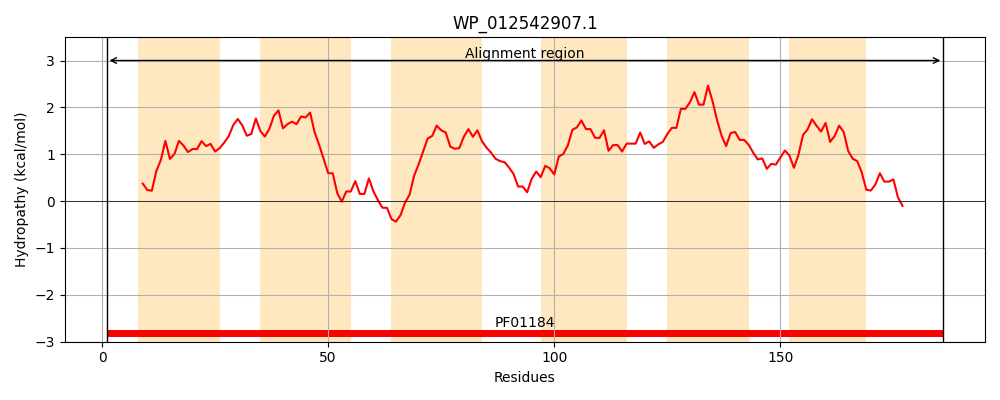
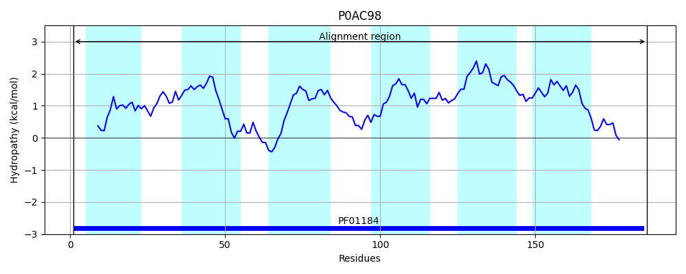
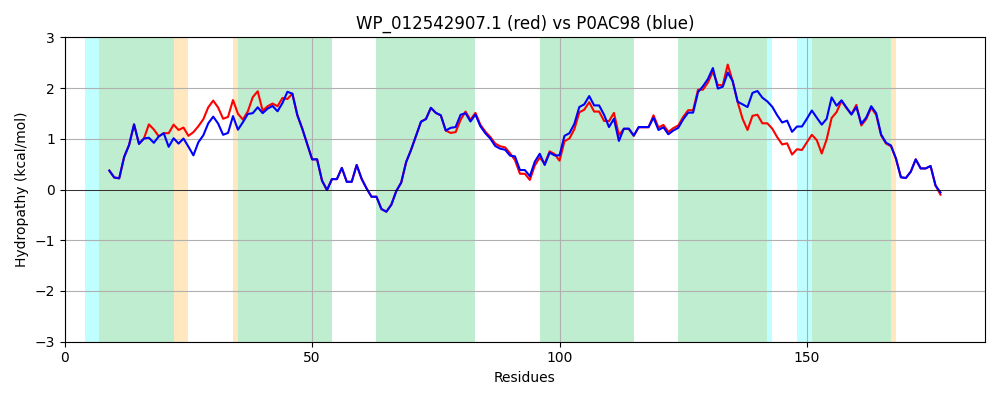

Hit Accession: P0AC98
Hit TCID: 2.A.96.1.1
Hit Description: gnl|BL_ORD_ID|8735 gnl|TC-DB|P0AC98|2.A.96.1.1 Inner membrane protein yaaH OS=Escherichia coli (strain K12) GN=yaaH PE=1 SV=1
Mach Len: 186
e:0.000000
Query TMS Count : 6
Hit TMS Count: 6
TMS-Overlap Score: 5.650000
Predicted Substrates:CHEBI:30031;succinate(2-), CHEBI:13704;acetate, CHEBI:24996;lactate
BLAST Alignment:
Score: 835 , Bit scores: 326 bits, E-value: 8.9e-116, Alignment length: 186, Percentage identity: 87
Query: 1 MGNTKLANPAPLGLMGFGMTTILLNLANSGLFAFDVAILAMGIFYGGIAQIFAGLLEYKKGNTFGLTAFTSYGSFWLTLVAILLMPKMGLAEAPNAHFLGMYLGLWGVFTLFMFFGTLKAARMLQFVFLSLTVLFALLAIGHLVDNEGIVKVAGWVGLVCGASAIYLAMGEVLNEQFGRTVLPIGE 186
MGNTKLANPAPLGLMGFGMTTILLNL N G FA D ILAMGIFYGGIAQIFAGLLEYKKGNTFGLTAFTSYGSFWLTLVAILLMPK+GL +APNA FLG+YLGLWGVFTLFMFFGTLK AR+LQFVF SLTVLFALLAIG++ N I+ AGW+GL+CGASAIYLAMGEVLNEQFGRTVLPIGE
Sbjct: 1 MGNTKLANPAPLGLMGFGMTTILLNLHNVGYFALDGIILAMGIFYGGIAQIFAGLLEYKKGNTFGLTAFTSYGSFWLTLVAILLMPKLGLTDAPNAQFLGVYLGLWGVFTLFMFFGTLKGARVLQFVFFSLTVLFALLAIGNIAGNAAIIHFAGWIGLICGASAIYLAMGEVLNEQFGRTVLPIGE 186 | Protein Hydropathy Plots: |
|---|
|  |  |
Pairwise Alignment-Hydropathy Plot:
|
|---|
|  |